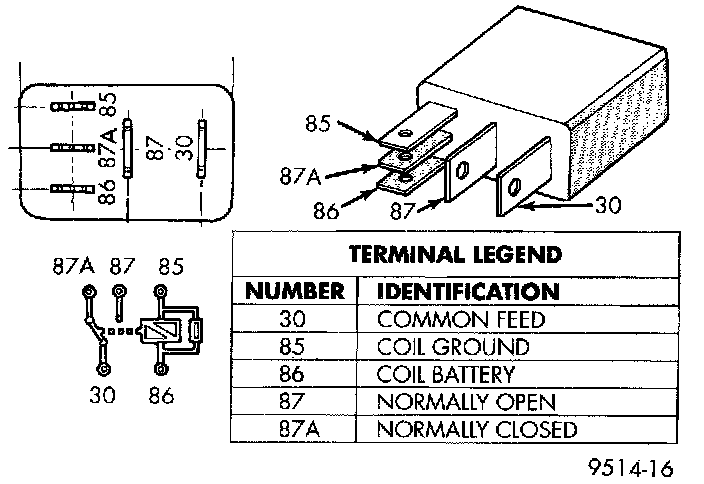

Horn Relay: Testing and Inspection
WARNING: ON VEHICLES EQUIPPED WITH AIRBAGS, REFER TO PASSIVE RESTRAINT SYSTEMS BEFORE ATTEMPTING STEERING WHEEL, STEERING COLUMN, OR INSTRUMENT PANEL COMPONENT DIAGNOSIS OR SERVICE. FAILURE TO TAKE THE PROPER PRECAUTIONS COULD RESULT IN ACCIDENTAL AIRBAG DEPLOYMENT AND POSSIBLE PERSONAL INJURY.
Horn Relay:

Relay Test
The horn relay is located in the Power Distribution Center (PDC) in the engine compartment. Refer to the PDC label for horn relay identification and location.
Remove the horn relay from the PDC as described to perform the following tests:
1. A relay in the de-energized position should have continuity between terminals 87A and 30, and no continuity between terminals 87 and 30. If OK, go to Step 2. If not OK, replace the faulty relay.
2. Resistance between terminals 85 and 86 (electromagnet) should be 75 ± 5 ohms. If OK, go to Step 3. If not OK, replace the faulty relay.
3. Connect a battery to terminals 85 and 86. There should now be continuity between terminals 30 and 87, and no continuity between terminals 87A and 30. If OK, see the Relay Circuit Test. If not OK, replace the faulty relay.
Relay Circuit Test
1. The relay common feed terminal cavity (30) is connected to battery voltage and should be hot at all times. If OK, go to Step 2. If not OK, repair the open circuit to the PDC fuse as required.
2. The relay normally closed terminal (87A) is connected to terminal 30 in the de-energized position, but is not used for this application. Go to Step 3.
3. The relay normally open terminal (87) is connected to the common feed terminal (30) in the energized position. This terminal supplies battery voltage to the horn(s). There should be continuity between the cavity for relay terminal 87 and the horn relay output circuit cavity of the wire harness connector for each horn at all times. If OK, go to Step 4. If not OK, repair the open circuit to the horn(s) as required.
4. The coil battery terminal (86) is connected to the electromagnet in the relay It is connected to battery voltage and should be hot at all times. Check for battery voltage at the cavity for relay terminal 86. If OK, go to Step 5. If not OK, repair the open circuit to the PDC fuse as required.
5. The coil ground terminal (85) is connected to the electromagnet in the relay. It is grounded through the horn switch when the horn switch is depressed. It can also be grounded by the Body Control Module (BCM) in response to inputs from the Vehicle Theft Security System (VTSS) or the Remote Keyless Entry (RKE) system. Check for continuity to ground at the cavity for relay terminal 85. There should be continuity with the horn switch depressed, and no continuity with the horn switch released. If not OK, see the diagnosis for the Horn Switch.